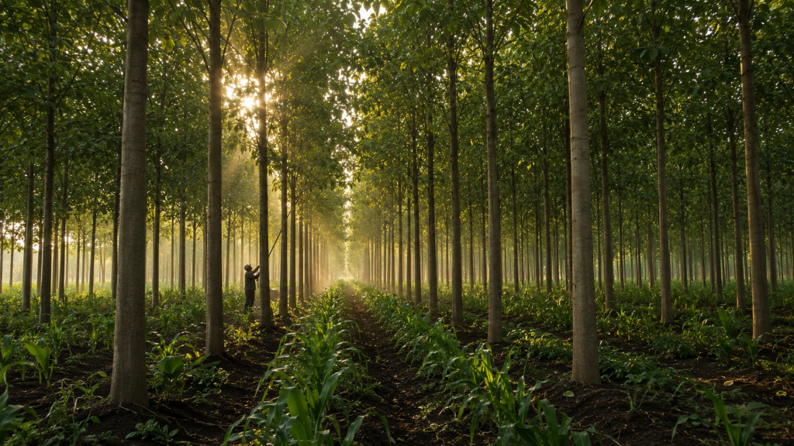

Gmelina arborea is one of the most financially rewarding timber trees available to Nigerian landowners. Most plantations are not realising that potential. The difference is almost always in the management.

Emeka bought five hectares in Ogun State threse years ago and planted Gmelina across the whole plot. He was told it was fast-growing, easy to manage, and commercially valuable. All of that is true. What nobody told him was that trees planted without a spacing plan, left without pruning, and given no intercropping strategy would produce crowded, branchy, low-value timber the premium market would not touch. He did not plant a timber plantation. He planted an expensive mistake with leaves on it.
Gmelina grows up to three metres in its first year, reaches harvestable size in six to ten years, and produces stable, workable wood that the furniture, plywood, and pulp industries actively seek. But the gap between a plantation that delivers on that promise and one that disappoints is almost entirely determined by three management decisions made in the first three years.
Reality Check: The difference between premium-grade and standard-grade Gmelina is not the species. It is the management. Straight, knot-free trunks command significantly higher prices per cubic metre. Branchy, crowded timber sells at commodity prices, if it sells at all.
Get the Spacing Right Before Anything Else
The standard recommendation for commercial timber production is a 3×3 metre grid. That spacing gives each tree enough sunlight and root space to fuel rapid growth without competing aggressively with its neighbours, and allows maintenance equipment to move through the rows cleanly. This is not a suggestion. It is the foundation the rest of the management cycle depends on.
Prune Early and Prune Deliberately
Gmelina throws lateral branches that create knots in the developing trunk, and knots reduce timber grade significantly. Begin removing lower branches at the end of the first growing season. Remove no more than one third of the living crown at any single pruning to avoid stressing the tree. Repeat annually through years two and three, progressively raising the clear trunk height. By year four, the trunk should be developing the straight, knot-free profile that commands premium pricing at harvest.
Intercrop During the Establishment Years
For the first two to three years, the canopy has not closed and sunlight still reaches the ground between the rows. That light is an asset most plantation owners leave unused. Maize, cassava, and cowpea are all well-suited to this window. Once the canopy closes around year three, the intercrop cycle ends naturally and the plantation moves into full timber production.
Reality Check: A well-managed Gmelina plantation intercropped through the establishment years can recover a significant portion of its setup costs before the first tree is harvested. The land is not waiting for year seven to start earning. It starts earning in year one.
Emeka’s plantation is three years old. The crowding is visible, the branching is established, and the window for easy corrective pruning has mostly passed. Some of it is still salvageable. Most of it will not reach premium grade.